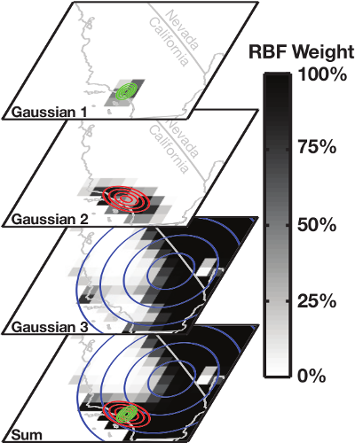

Research Interests
Our research is at the intersection of atmospheric chemistry and the carbon cycle.Specifically, our work aims to quantify the impacts of variations in atmospheric chemistry on the carbon cycle and, conversely, bring insights from the carbon cycle into atmospheric chemistry. The primary tools that we use and develop in our work are: Bayesian inference, machine learning, and satellite remote sensing. Please see below for details on current research areas.
Current Research Areas:
- Sources and sinks of atmospheric methane
- Chemistry-climate feedbacks, variability, and predictability
- Urban carbon dioxide
- High-dimensional inverse problems
Current Research Areas
Sources and sinks of atmospheric methane (back to top)
Methane is the second most important anthropogenic greenhouse gas after CO2. As a short-lived climate forcing agent (lifetime ~10 years), it provides a lever for slowing near-term climate change. Major anthropogenic sources of methane include oil/gas exploration and use, livestock, landfills, coal mining, and rice cultivation. Wetlands are the dominant natural source. The magnitude and spatial distribution of methane sources is highly uncertain and difficult to constrain.

Fig. Simulated methane concentrations using emissions constrained by satellite observations.
Objectives:
- Improve our understanding of processes governing spatial patterns and decadal trends of atmospheric methane
- Test the utility of space-borne observations (such as GOSAT, TROPOMI, and MethaneSAT) for constraining methane emissions
- Validate methane observations from orbital platforms using surface, aircraft, and column observations
Chemistry-climate feedbacks, variability, and predictability (back to top)
The hydroxyl radical (OH) is the primary oxidant for a number of non-CO2 greenhouse gases and CFCs. It also regulates the production of tropospheric ozone, a leading pollutant. As such, changes in tropospheric OH could have large implications for both future climate and air quality. However we currently lack a predictive understanding of OH on decadal-to-centennial timescales, evidenced by the disagreement between global models in their simulation of OH.

Fig. OH concentrations in a 6000 year equilibrium simulation with a coupled chemistry-climate model.
Objectives:
- Investigate the chemical feedback mechanisms and their timescales in both simple and complex models
- Identify aspects of the chemical system that may be more predictable
- Quantify the importance of the natural feedbacks and oscillations for predictability of greenhouse gas burdens
Urban carbon dioxide (back to top)
Carbon dioxide (CO2) is an atmospheric trace gas and the largest anthropogenic radiative forcer. CO2 levels have increased from 280 ppm in pre-industrial times to greater than 400 ppm in the present, largely due to changes in fossil fuel emissions, and can be measured via ground stations, aircraft, and satellites. The paradigm in ground-based trace gas measurements has been to employ a sparse network of high-precision instruments that can be used to measure atmospheric concentrations. These concentrations are then used to estimate emission fluxes, validate numerical models, and quantify changes in physical processes. The advent of low-cost monitors has allowed for new observational networks with dense spatial coverage.

Fig. Satellite measurements related to photosynthetic activity.
Objectives:
- Determine the optimal CO2 measurement network for assessing CO2 fluxes at high spatio-temporal resolution
- Use Solar-Induced chlorophyll Fluorescence (SIF) measurements from TROPOMI to estimate CO2 uptake from the biosphere
- Use the dense observational networks to estimate hourly atmospheric fluxes of CO2 at high spatial resolution
High-dimensional inverse problems (back to top)
Inverse models quantify the state variables driving the evolution of a physical system by using observations of that system. This requires a physical model that relates a set of input variables (state vector) to a set of output variables (observation vector). A critical step in solving the inverse problem is determining the amount of information contained in the observations and formulating the problem in a tractable manner. This is a non-trivial problem when both the input and output variables are high-dimensional, as is commonly encountered in atmospheric science.

Fig. Illustration of using a Gaussian mixture model and radial basis functions for defining the state vector.
Objectives:
- Explore different methods of constructing the state vector in an inverse model
- Quantify the information content of dense observing systems
- Develop novel methods for estimating greenhouse gas fluxes